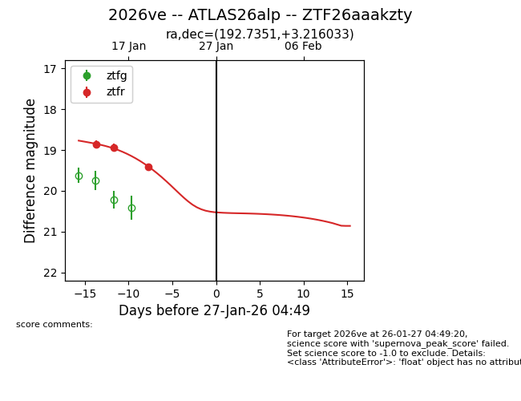
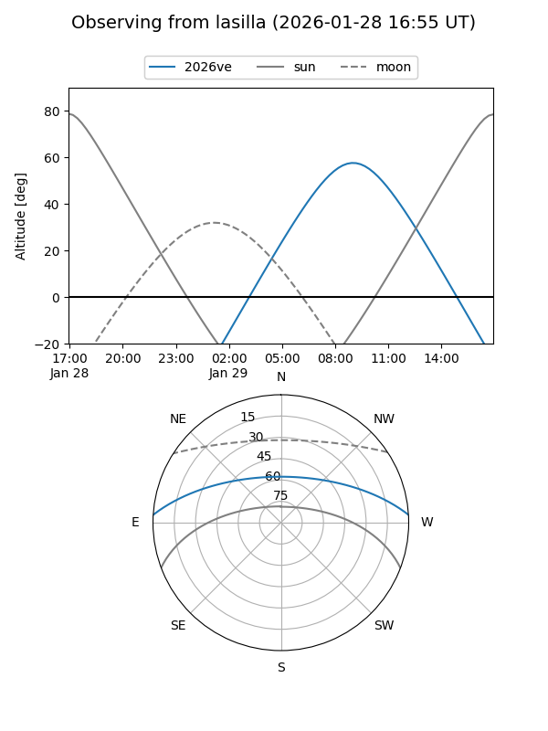
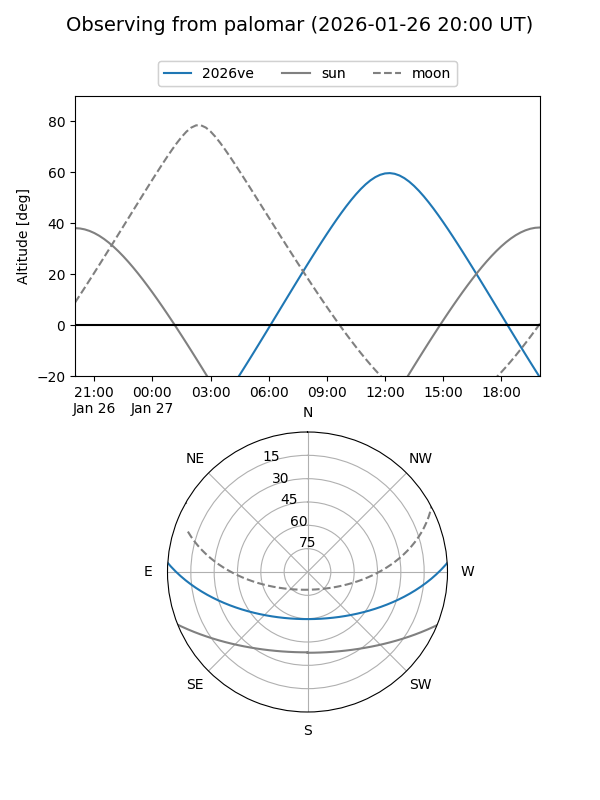
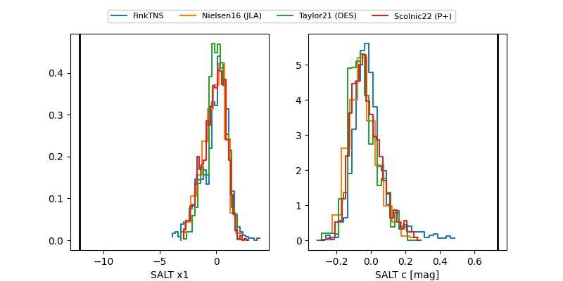

2026ve
Target 2026ve at 2026-01-26 05:21
Aliases and brokers:
FINK: link
Lasair: link
ALeRCE: link
TNS: link
YSE: link
alt names
ZTF26aaakzty (ztf,fink_ztf)
2026ve (tns,yse)
ATLAS26alp (atlas)
Coordinates:
equatorial (ra, dec) = 192.7351,+3.21603
equatorial (HMS+DMS) = 12:50:56.41,+03:12:57.72
galactic (l, b) = (302.6255,+66.08748)
Flags:
Photometry:
last ztfr=19.41
3 ztfr detections
Lightcurve

Visibility


Additional plots
